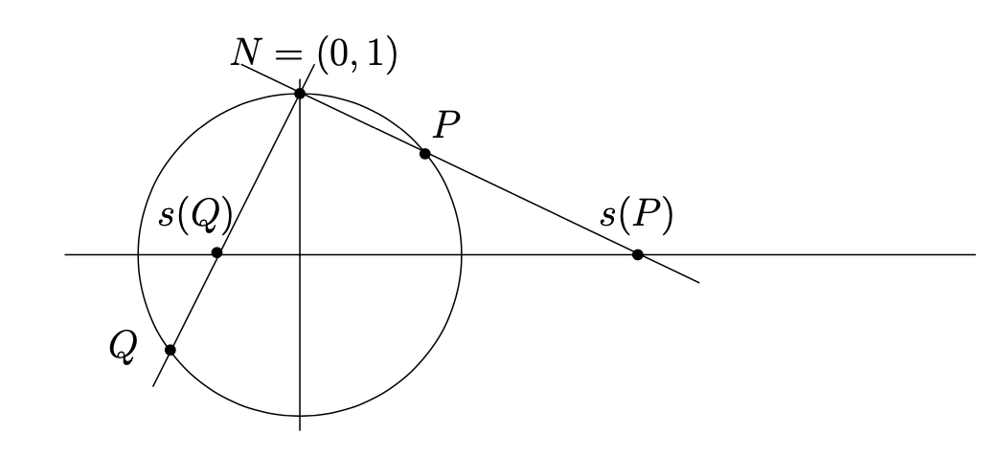
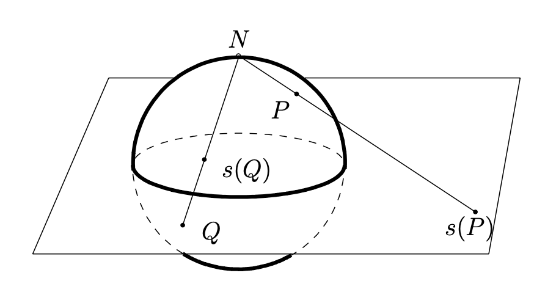

Draw the relevant similar triangles and verify the formula \(s(x,y) = \frac{x}{1-y}\text{.}\)
Section 1.3 Stereographic projection
Subsection 1.3.1 Stereographic projection \(S^1\to \extR\)
Let \(S^1\) denote the unit circle in the \(x,y\)-plane:
\begin{equation}
S^1 = \{(x,y)\in \R^2 \colon x^2+y^2=1\}\,.\tag{1.3.1}
\end{equation}
Let \(N=(0,1)\) denote the “north pole” (that is, the point at the “top” of the unit circle). Given a point \(P=(x,y)\neq N\) on the unit circle, let \(s(P)\) denote the intersection of the line \(\overline{NP}\) with the \(x\)-axis. See Figure 1.3.1. The map \(s\colon S^1\setminus \{N\}\to \R\) given by this rule is called stereographic projection. Using similar triangles, it is easy to see that \(s(x,y)=\frac{x}{1-y}\text{.}\)

Checkpoint 1.3.2.
We extend stereographic projection to the entire unit circle as follows. We call the set
\begin{equation}
\extR=\R\cup \{\infty\}\tag{1.3.2}
\end{equation}
the extended real numbers, where “\(\infty\)” is an element that is not a real number. Now we define stereographic projection \(s\colon S^1 \to \extR\) by
\begin{equation}
s(x,y) =
\begin{cases}
\frac{x}{1-y} \amp y\neq 1\\
\infty \amp y=1.
\end{cases}\tag{1.3.3}
\end{equation}
Subsection 1.3.2 Stereographic projection \(S^2\to \extC\)
The definitions in the previous subsection extend naturally to higher dimensions. Here are the details for the main case of interest.
Let \(S^2\) denote the unit sphere in \(\R^3\text{:}\)
\begin{equation}
S^2 = \{(a,b,c)\in \R^3\colon a^2+b^2+c^2=1\}\,.\tag{1.3.4}
\end{equation}
Let \(N=(0,0,1)\) denote the “north pole” (that is, the point at the “top” of the sphere, where the positive \(z\)-axis is “up”). Given a point \(P=(a,b,c)\neq N\) on the unit sphere, let \(s(P)\) denote the intersection of the line \(\overline{NP}\) with the \(x,y\)-plane, which we identify with the complex plane \(\C\text{.}\) See Figure 1.3.3. The map \(s\colon S^2\setminus \{N\}\to \C\) given by this rule is called stereographic projection. Using similar triangles, it is easy to see that \(s(a,b,c)=\frac{a+ib}{1-c}\text{.}\)

We extend stereographic projection to the entire unit sphere as follows. We call the set
\begin{equation}
\extC=\C\cup \{\infty\}\tag{1.3.5}
\end{equation}
the extended complex numbers, where “\(\infty\)” is an element that is not a complex number. Now we define stereographic projection \(s\colon S^2 \to \extC\) by
\begin{equation}
s(a,b,c) =
\begin{cases}
\frac{a+ib}{1-c} \amp c\neq 1\\
\infty \amp c=1.
\end{cases}\tag{1.3.6}
\end{equation}
Subsection 1.3.3 Conjugate Transformations
Let \(\mu \colon X\to Y\) be a bijective map. We say that maps and \(f\colon X\to X\) and \(g\colon Y\to Y\) are conjugate transformations (with respect to the bijection \(\mu\)) if \(f = \mu^{-1}\circ g\circ \mu\text{.}\) Exercise Group 1.3.4.3–6 demonstrate examples of this definition for which \(\mu\) is stereographic projection.
Checkpoint 1.3.4.
Show that \(f=\mu^{-1}\circ g \circ \mu\) if and only if \(\mu\circ f = g\circ \mu\text{.}\)
Exercises 1.3.4 Exercises
Formulas for inverse stereographic projection.
It is intuitively clear that stereographic projection is a bijection. Make this rigorous by finding a formula for the inverse.
1.
For \(s\colon S^1\to \extR\text{,}\) find a formula for \(s^{-1}\colon \extR\to S^1\text{.}\) Find \(s^{-1}(3)\text{.}\)
Answer.
\begin{equation*}
s^{-1}(r) = \begin{cases}
\left(\frac{2r}{r^2+1},\frac{r^2-1}{r^2+1}\right) \amp
\text{ if } r\neq \infty\\ (0,1)\amp \text{ if } r=\infty
\end{cases}
\end{equation*}
\begin{equation*}
s^{-1}(3) = (3/5,4/5)
\end{equation*}
2.
For \(s\colon S^2\to \extC\text{,}\) find a formula for \(s^{-1}\colon \extC\to S^2\text{.}\) Find \(s^{-1}(3+i)\text{.}\)
Answer.
\begin{equation*}
s^{-1}(z) = \begin{cases}
\left(\frac{2\re(z)}{|z|^2+1},\frac{2\im(z)}{|z|^2+1},
\frac{|z|^2-1}{|z|^2+1}\right)\amp \text{ if } z\neq
\infty\\ (0,0,1) \amp \text{ if } z=\infty \end{cases}
\end{equation*}
\begin{equation*}
s^{-1}(3+i) = (6/11,2/11,9/11)
\end{equation*}
Transformations that are conjugate via stereographic projection.
Suggestion: Use Checkpoint 1.3.4 for the exercises that follow.
3.
Let \(f\colon S^1\to S^1\) and \(g\colon \extR\to
\extR\) be given by
\begin{align*}
f(x,y)\amp =(x,-y)\\
g(x)\amp =\begin{cases}1/x \amp x\neq 0,\infty\\
\infty \amp x=0\\
0 \amp x=\infty.\end{cases}
\end{align*}
Show that \(f,g\) are conjugate transformations with respect to stereographic projection.
4.
Let \(R_{Z,\theta}\colon S^2\to S^2\) and \(T_{Z,\theta}\colon \extC\to \extC\) be given by
\begin{align*}
R_{Z,\theta}(a,b,c)\amp =
(a\cos\theta-b\sin\theta,a\sin\theta+b\cos\theta,c)\\
T_{Z,\theta}(z)\amp = \begin{cases} e^{i\theta}z \amp
z\neq \infty\\ \infty\amp z=\infty.\end{cases}
\end{align*}
Show that \(R_{Z,\theta},T_{Z,\theta}\) are conjugate transformations with respect to stereographic projection.
5.
Let \(R_{X,\pi}\colon S^2\to S^2\) and \(T_{X,\pi}\colon \extC\to
\extC\) be given by
\begin{align*}
R_{X,\pi}(a,b,c)\amp =(a,-b,-c)\\
T_{X,\pi}(z)\amp =\begin{cases}1/z \amp z\neq 0,\infty\\
\infty \amp z=0\\
0 \amp z=\infty.\end{cases}
\end{align*}
Show that \(R_{X,\pi},T_{X,\pi}\) are conjugate transformations with respect to stereographic projection.
6.
Let \(R_{X,\pi/2}\colon S^2\to S^2\) and \(T_{X,\pi/2}\colon \extC\to
\extC\) be given by
\begin{align*}
R_{X,\pi/2}(a,b,c)\amp =(a,-c,b)\\
T_{X,\pi/2}(z)\amp =\begin{cases} \frac{z+i}{iz+1}\amp z\neq i,\infty\\
\infty \amp z=i\\
-i \amp z=\infty.\end{cases}
\end{align*}
Show that \(R_{X,\pi},T_{X,\pi}\) are conjugate transformations with respect to stereographic projection.
7. Projections of endpoints of diameters.
Show that \(s(a,b,c)(s(-a,-b,-c))^\ast=-1\) for any point \((a,b,c)\) in \(S^2\) with \(|c|\neq 1\text{.}\) Conversely, suppose that \(zw^\ast=-1\) for some \(z,w\in \C\text{.}\) Show that \(s^{-1}(z)=-s^{-1}(w)\text{.}\)